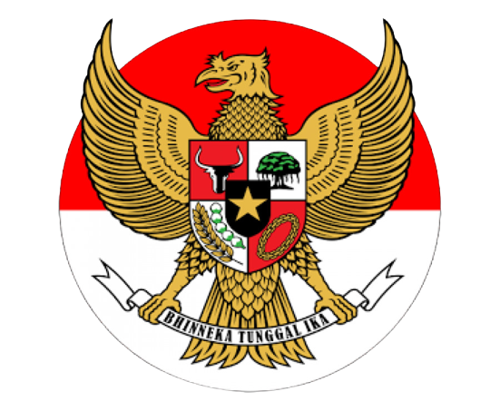
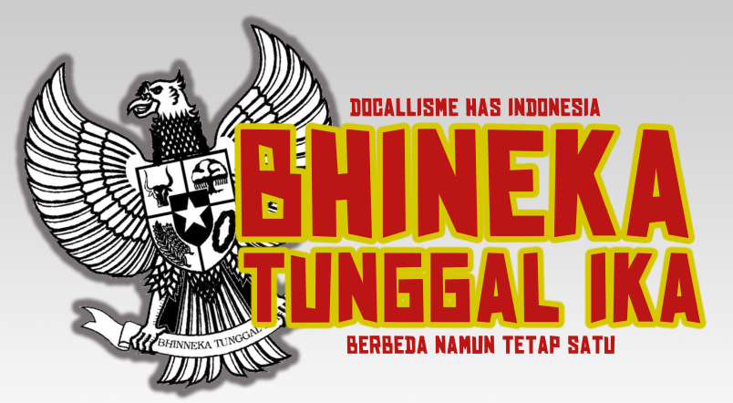

Faktor Pendorong Persatuan
Kelompok 3 : Yudha, Andrian, Naeli, Nasywa, Alif, Salwa
Menu
Skip to content
Beranda
|
Jancuk kabeh
1. Pendahuluan

2. Pancasila

3. Bhineka Tunggal Ika
6. Nasionalisme & Patriotisme
4. Sumpah Pemuda
5. Semangat Kebersamaan
7. Rasa Toleransi